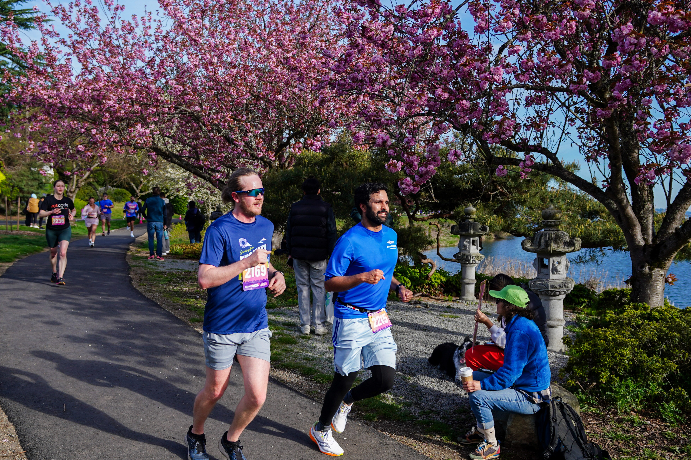

Race Log
Triathlons, running, and endurance projects.

About
I did not grow up as an athlete, and only found running and cycling after college. I started inconsistently, mostly as a way to get healthier and see what my body could adapt to. I am still very much a recreational endurance athlete, but the process of getting a little better has become one of the most grounding parts of my life.
Race List
Photos